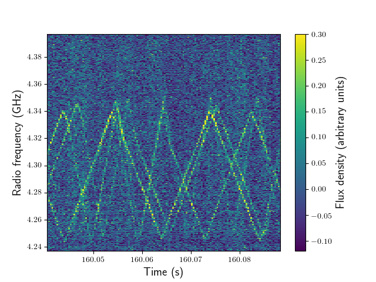

Convolutional Neural Networks for Signal Classification in Radio Astronomy
- Project contributors: Akshay Suresh (lead), Ryan J. Hill & Ethan S. Bair
- Github code: RFI-classifier
- Project report: PDF
- Programming language: PyTorch
- Skills: Deep learning, Supervised learning, Radio astronomy
Data Prep
We generated simulated data for our study to circumvent the need to manually label thousands of real-world data chunks for supervised learning. As a first pass, we defined the following five classes for our signal classification task, including four categories of interference signals.
llbb: Long-lived broadband interference + background Gaussian noisellnb: Long-lived narrowband interference + background Gaussian noiseslbb: Short-lived broadband interference + background Gaussian noiseslnb: Short-lived narrowband interference + background Gaussian noisenoise: Background Gaussian noise only
For each of the above classes, we simulated 1200 images of size 128 pixels \(\times\) 128 pixels. From these, we randomly selected and set aside 200 images per category as validation data. The remaining images (1000 per category) formed our training dataset.
Sample frequency-time images of signals belonging to the llbb (top left), llnb (top right), slbb (bottom left) and slnb (bottom right) output classes.
Since our training data are balanced across all output classes, we adopt the accuracy metric to quantify our model performance. During model training, we observed how the category-integrated model accuracy (defined below) varied with training epoch for our training and validation data. \[ {\rm Network \ accuracy \ across \ all \ classes} = \frac{\rm No.\ of\ images \ correctly \ classified}{\rm Total \ no. \ of \ images} \times 100\% \] We also investigated confusion matrices built using category-specific model accuracies. We encourage interested readers to consult our project report for relevant details.
Model Architecture
Neural net architectures for various applications are often arrived at through trial and error. In our study, we experimented with toy CNNs of different depths, studying their maximum achieved accuracy when optimally trained.
A neural network is said to be an N-layer network if it contains N layers excluding its input layer. A 1-layer network, by definition, then contains zero hidden layers between its input and output layers.
Our base network is a 6-layer model whose hidden layers include two convolutional layers, two max-pooling layers, and one fully connected (or dense) layer. We sandwiched ReLU activation functions between our convolutional and max-pooling layers to enable our model to learn non-linear behaviors. Finally, the outputs of our flattened dense layer are normalized to probabilities using a softmax activation function.
Our base 6-layer CNN model
We built models of greater depth by inserting additional convolutional and max-pooling layers ahead of our dense layer. We refer readers to Figures 7–10 of our project report for architecture diagrams of our deeper models.
Model Training & Results
We trained all of our models using the categorical cross-entropy (CE) loss function to perform multiclass classification. Further, we uniformly applied the Adam optimizer for model backpropagation with an initial learning rate of \(10^{-5}\).
Accuracy curves for CNN models of different depths (various colors). Dotted and solid curves represent network performances on the training and validation data respectively.
Starting with our base network (blue curves), we notice that our model performance grows monotonically on the training data (dotted curve) with increasing epoch. However, the network accuracy on the validation data (solid curve) drops after epoch 3, suggesting that the model has now begun to overfit the training data. Based on these trends, we reloaded our saved model weights from epoch 3 to obtain robust predictions using our 6-layer network. Note that our 6-layer model, even at epoch 3, only reaches a maximum accuracy of \(85\%\) on the validation data.
Training CNNs of increasing depth, we observe a growth in the maximum network accuracy achieved under conditions of a robust fit. However, the incremental gain in network accuracy diminishes with every added layer. Setting a 95% accuracy threshold, we find that an 8/9-layer CNN model is adequate for our classification problem.
Areas for Improvement
Our definition of interference signal classes is overly simplistic to allow ready extension to real-world data. Interference signals in radio telescope data often exhibit complex spectrotemporal characteristics that do not fall neatly into any of our predefined output classes. For instance, consider the below sawtooth interference signal (some sort of radar?) seen in data from the Green Bank Telescope in West Viriginia, USA. 
Our models do not account for scenarios where multiple signal classes are present in a single frequency-time snippet. For instance, what if a weak astrophysical signal of interest happens to coincide in time with two bright interference signals of different bandwidths?
- Perhaps multilabel classification is worth an exercise.
- Alternatively, image segmentation routines may present a path forward.